History: While Houston orginally had the Houston Oilers in Houston, that team ended up moving to Tennessee and became the Tennesse Titans. However, with the expansion, Houston once again had an NFL team in 2002.
Joining the AFC South, the Houston Texans will have played 22 seasons in the NFL
Notable Players: JJ Watt(DE), Andre Johnson(WR), Arian Foster(RB), Deandre Hopkins(Wr), Deshaun Watson(QB)
Latest Season Stats -
Head Coach: DeMeco Ryans
Record: 3-13-1
Standing: 4th NFC South
Houston Rockets
League: NBA
Stadium: Toyota Center
Information: Founded in 1967 as the San Diego Rockets, they shortly then move to Houson and renamed themselves as the Houston Rockets. Having even won the NBA finals back in 1994 and 1995,
the Houston Rockets have given the city of Houston something to be proud of. Playing in the Southwest Division, the Houston Rockets are one of the multiple teams in Texas, facing off against teams like the Dallas Mavericks and the San Antonio Spurs.
Notable Players: Hakeem Olajuwon(C), James Harden(SG), Tracy Mcgrady(SG), Yao Ming(C), Moses Malone(C)
Latest Season Stats -
Head Coach: Stephen Silas
Record: 20-62
Standing: 15th NBA Western Conference
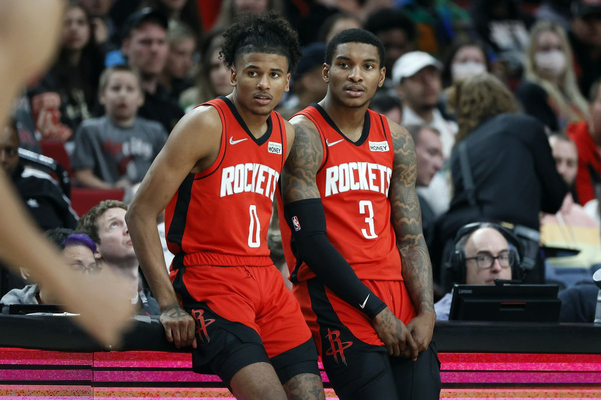
Houston Astros
League: MLB
Stadium: Minute Maid Park
Information: Initially known as the Houston Colt, the Team was founded back in 1962 where they later renamed themselves as the Houston Astros in 1965. Winning the World Series, the Astros are the pride jewel of Houston.
The Houston Astros were previously part of the National League for their first 51 seasons but are now part of the American League in the MLB. Playing in the American League, specifically the West division means they face teams like the Los Angeles Angels, the Texas Rangers, the Seattle Mariners, and the Oakland Athletics on a common occurence.
Notable Players: Jeff Bagwell(1B), Craig Biggio(2B), Jose Cruz(OF), Jose Altuve(2B), Lance Berkman(OF)
Latest Season Stats -
Head Coach: Dusty Baker
Record: 106-56
Standing: 1st American League West
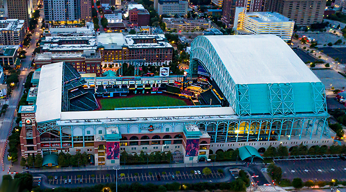
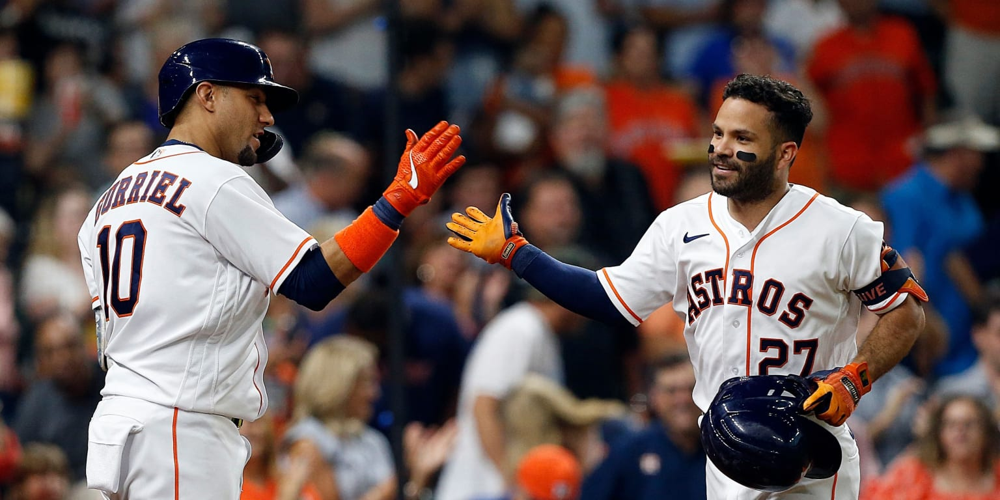
Houston Dynamo FC
League: MLS
Stadium: Shell Energy Stadium
Information: Founded in 2005, the Houston Dynamo were created as a part of Major League Soccer's expansion program. Playing in the western conference, the Houston Dynamo commonly face opponents such as the Seattle Sounder and FC Dallas. The Houston Dynamo also sponor the Houston Dash, the Women MLS team for Houston.
Notable Players: Brian Mullen(RMF), Dwayne De Rosario(F), Brad Davis(MF), Wil Bruin(2B), Brian Ching(F)
Latest Season Stats -
Manager: Pat Onstad
Record: 10-6-18
Standing: 13th Western Conference
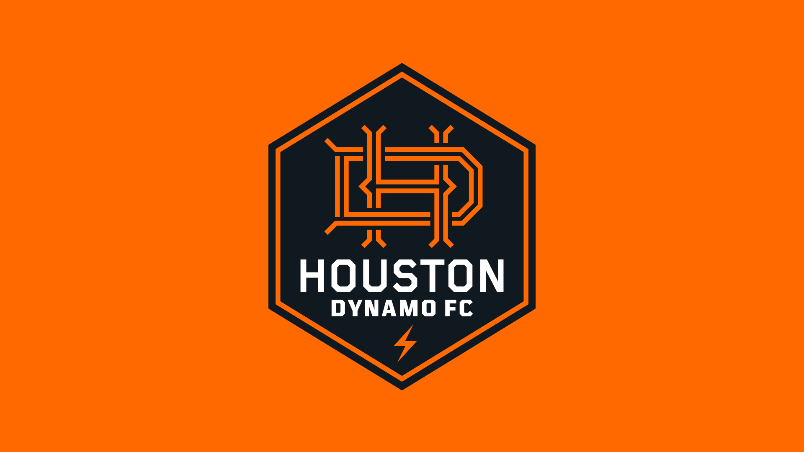
COLLEGE TEAMS
University of Houston
NCAA Football-
Stadium: TDECU Stadium
Information: Previously playing in the AAC, now playing in the Big 12, the University of Cougars College Football team have had the opportunity to compete in many bowl games, and have even gone as far as ranked in the AP top 25 for multiple seasons.
Notable Players: Case Keenum(QB), Ed Oliver(DT), Tyus Bowser(OLB), William Jackson III(CB), Nathaniel Dell(WR)
Latest Season Stats -
Head Coach: Dana Holgorsen
Record: 8-5
Standing: 5th American Athletic Conference
NCAA Basketball-
Stadium: Fertita Center
Information: Previously playing in the AAC, now playing in the Big 12, The University of Houston Basketball team have consistently ranked, even ranking 1st in the AP 25 College Basketball last season. Consistently making it to March Madness, the Cougars even finished in the Sweet 16.
Information: Playing in the NCAA Division I Football Championship Subdivision, Texas Southern University is known as the TSU Tigers.
Notable Players: Michael Stahan(DE), Warren Wells(WR), Tyus Bowser(OLB), William Jackson III(CB), Nathaniel Dell(WR)
Latest Season Stats -
Head Coach: Clarence McKinney
Record: 5-6
Standing: 3rd Southwestern Athletic Conference
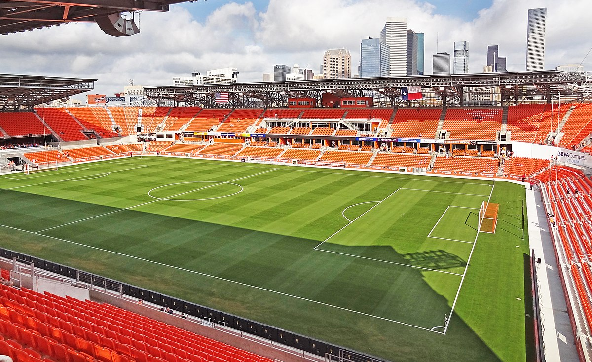
NCAA Basketball-
Stadium: TSU Health and Physical Education Arena
Information: The Texas Southern Tigers play in the Southwestern Athletic Conference for NCAA Men's Basketball and is a D1 Basketball School.
Notable Players: John Walker III (F), Jordan Gilliam (G), PJ Henry(G)
Latest Season Stats -
Head Coach: Johnny Jones
Record: 14-21
Standing: 8th Southwestern Athletic Conference
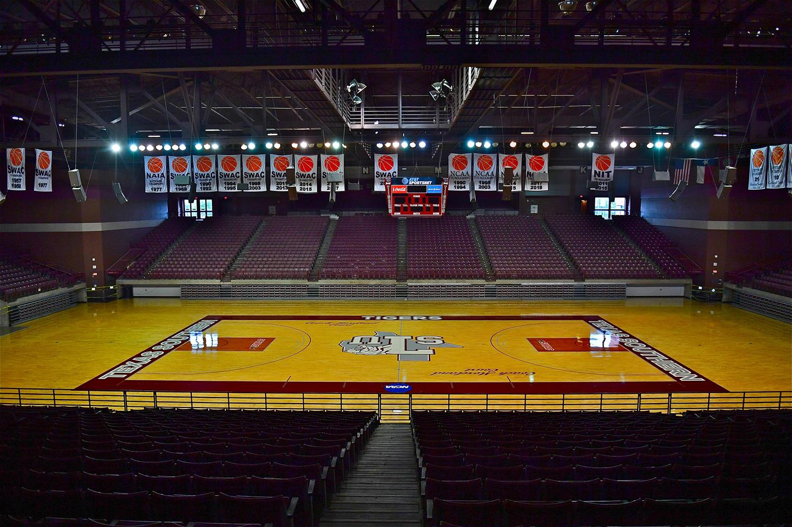
Rice University
NCAA Football-
Stadium: Rice Stadium
Information: A private University, Rice University is in the NCAA Conference USA, however they are joining the American Athletic Conference this upcoming season. They are also a Divison I football school.
Notable Players: TJ McMahon(QB), Cameron Montgomery(HB), Bradley Rozner(WR), Chris Conti(LB)


 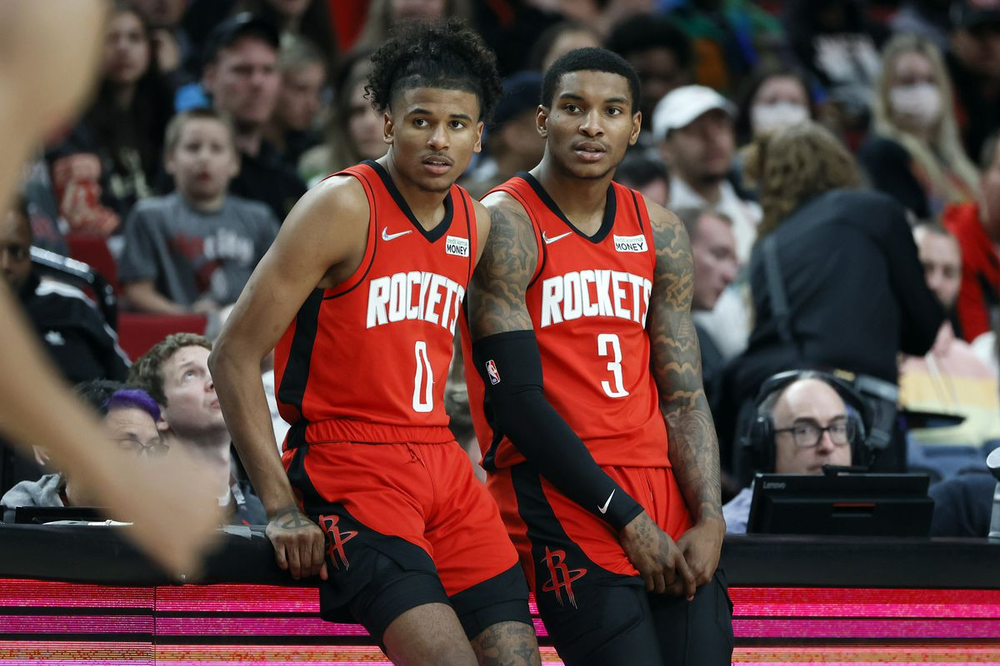
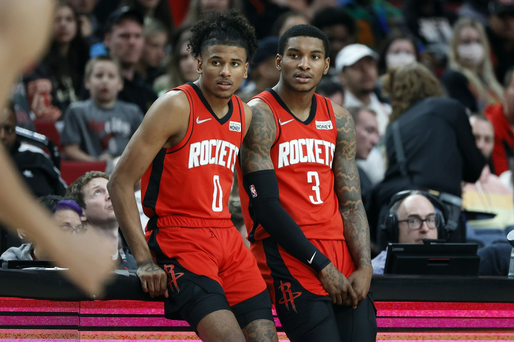
 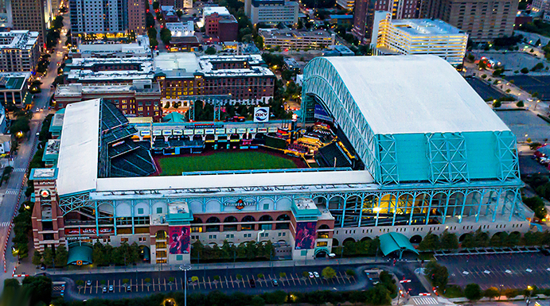
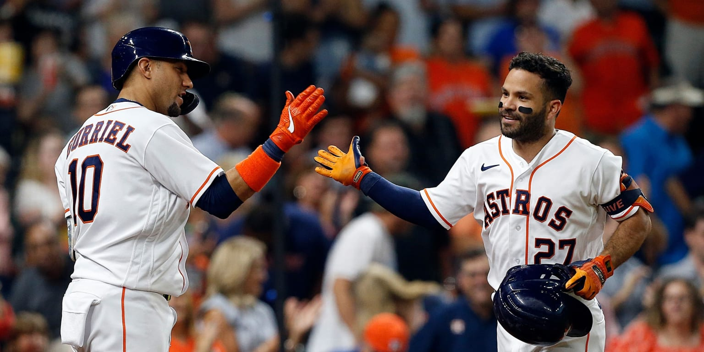
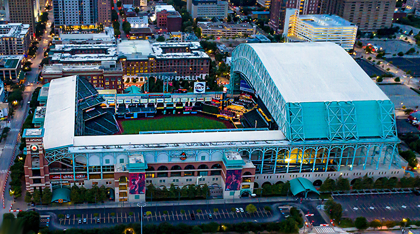
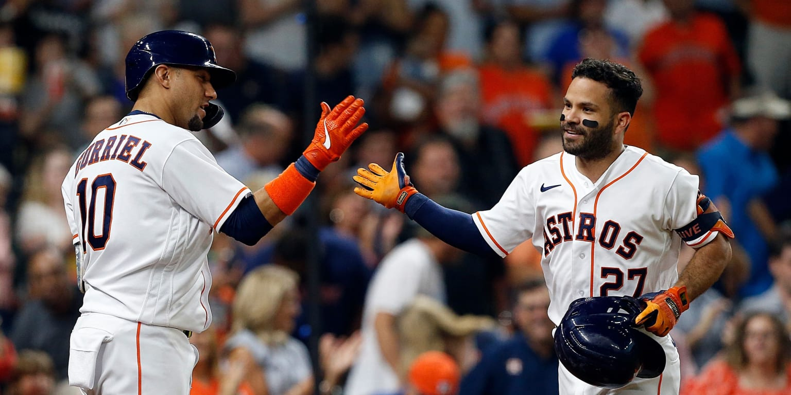


 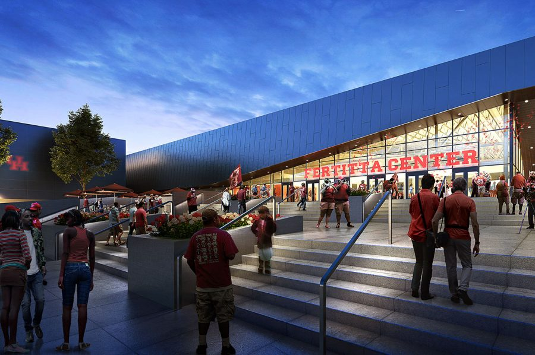
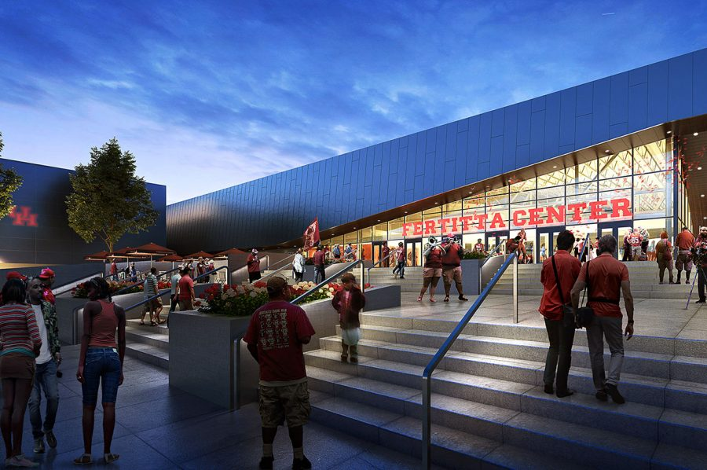

 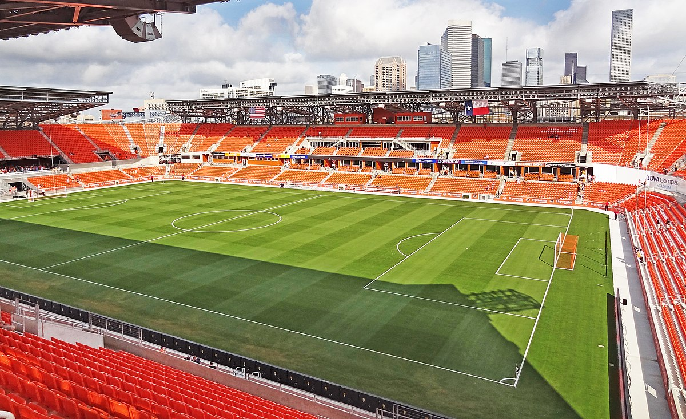
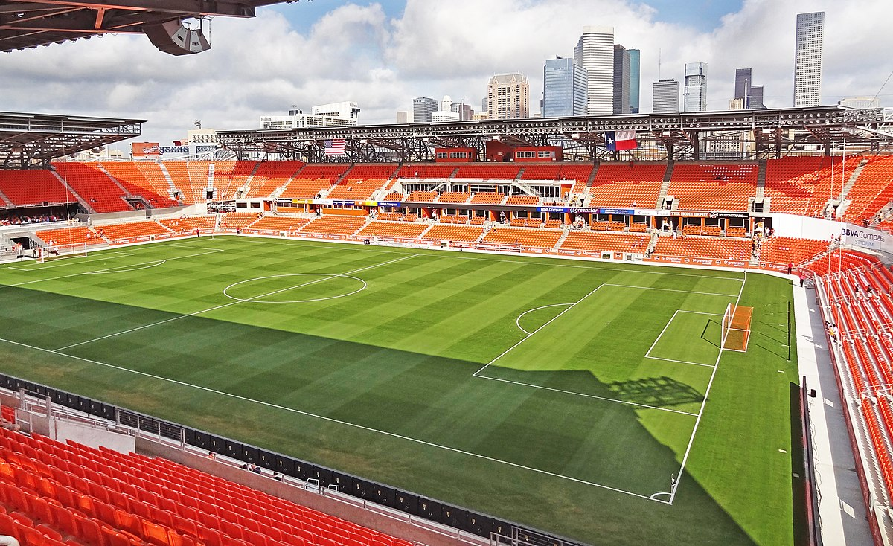

 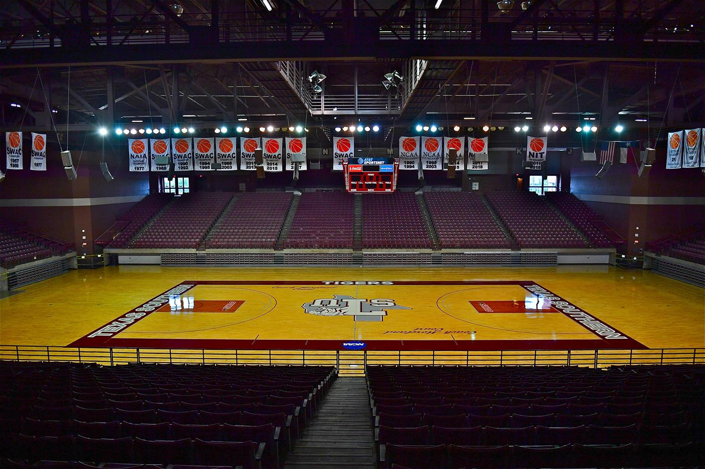
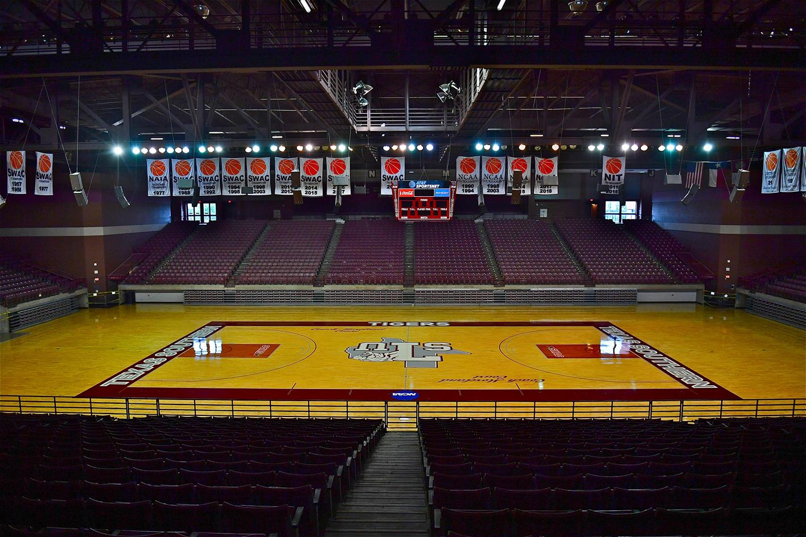